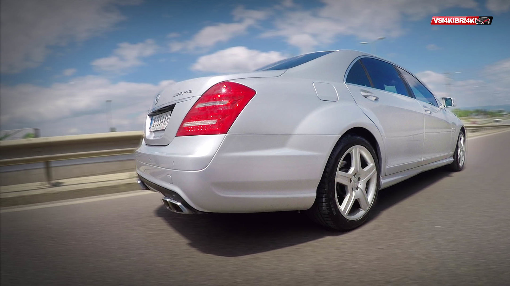
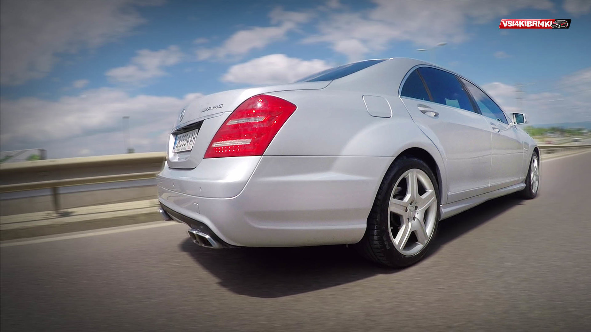

MERCEDES S-class (w221) 2005-2013
 

Гамата от вграждани двигатели е доста голяма. Познатите по нашите географски ширини са:
Бензинови:
S350 3.5литров V6 272к.с който страда от проблеми с балансиращ вал и
подобният с biturbo 306к.с. с доста нисък разход на гориво за този клас
10-17л./100км.
S400 hibrid с 3.5литровия V6 и подпомагащ електромотор с литиево йонна
батерия, cлед феислифта
S500 5.5литров V8 388к.с. и следващото поколение V8 biturbo с 435к.с
Брилянтен агрегат,с изключителен баланс, неочаквана мощ и разход между
11-20л./100км. Препоръчителен за модела. Някои двигатели от първа
генерация страдат от проблеми с моторния компютър.
S600 5.5литтов V12 с две турбини и 517к.с и доста въръящ момент. Скъп за
поддръжка
AMG разработките са:
S63AMG 6.2литров V8 525к.с. наи-големия атмосферен осмак в серийно
производство на марката
и......
S65AMG този 6.0литров V12 biturbo мастодонт достига 612к.с и ужасяващите
1000Nm. въртящ момент. Интересно е че на магистралата,където може
подмине 300км/ч. при законово каране не надвишава 12л/100км. Градският
му апетит е около 20+ литра за 100км. Доста скъп за поддръжка.
Дизели:
S320cdi 3.0литров V6 235к.с. понякога страдащ от проблеми с дюзи, турбо
и маслен охладител.
S350cdi bluetec 3.0литров V6 235к.с. и двата агрегата са с доста нисък
разход 8-15л./100км.
S420cdi V8 320к.с и 730Nm. 8-15л./100км.
Tрансмисиите:
При на W221 наблюдаваме уникална хармония между двигател,скорости и колела. Тя е супер иновативна. 7 степенна и се нарича 7Gtronic. Позволява на колата изумително плавно потегляне и движение,както и завидна динамика с нисък разход на гориво. Само S600 и злобният S65AMG остава с предишната 5 степенна скоростна кутия,която единствена може да понесе неприличният въртящ момент от 1000Nm.
Екстри и системи:
- Команд система управляваща голяма част от екстрите на автомобила.
- Найтвижън система. Инфра червена камера прожектира пътя на дисплей на
арматурното табло.
- Пресейф система подготвяща колата за удар,затягайки коланите,вдигайки
стъклата,задейства спирачката и ред други неща.
- Вграден е джоистик с който управляваме менюто на автомобила.
Съветваме
При екземплярите с 4х4 задължително,регулярно да се инспектира карданният вал на предният мост. Често се наблюдава прекомерно износване на карето на вала. Ако момента се изпусне следва счупване и най-често това чупи и скоростната кутия,през която той минава.
В заключение:
Колата е изумителна за времето си. Надминава очакванията и превъзхожда конкуренцията.Превъзходна за шофиране,с преграсно спиране,управление и завидна динамика. Здрава и надеждна ,с някои изключения разбира се. След 8-13години се намират достатъчно запазени екземпляри в отлично състояние,около и над средната цена. Все пак трябва да се обръща внимание на работата на трансмисията,окачването,двигателя и електрониката.